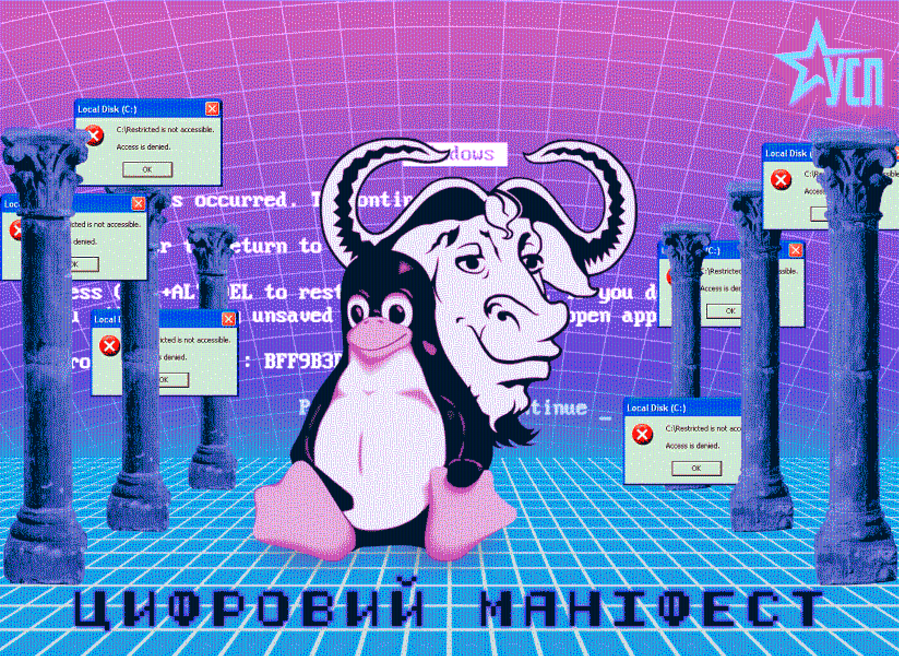

Капіталізм XXI століття вже не обмежується володінням фабриками, шахтами та банками. Його головною зброєю стало володіння кодом.
Кожна закрита програма є цифровою фабрикою, збудованою на приватній власності. Кожна пропрієтарна ліцензія є цифровим парканом навколо суспільного знання. Кожен користувач, позбавлений можливості читати, змінювати або поширювати програму, є відчуженим від власного засобу праці.
Ми категорично відкидаємо саму ідею існування пропрієтарного програмного забезпечення.
Програма не є товаром.
Код не є власністю.
Знання не може належати окремій корпорації.
Пропрієтарне ПЗ — цифровий капіталізм у чистому вигляді
Капіталіст не виробляє програмне забезпечення сам. Його створюють програмісти. Його тестують користувачі. Його локалізують волонтери. Його документують спільноти. Його підтримують системні адміністратори.
Корпорація лише проголошує своє право володіти результатом колективної праці. Це нічим не відрізняється від привласнення фабрики, яку побудували робітники.
Закритий код є цифровим аналогом приватної власності на засоби виробництва.
Свобода програмного забезпечення є свободою людини
Ми визнаємо лише одну етичну модель існування програмного забезпечення — Вільне Програмне Забезпечення.
Кожна людина повинна мати безумовне право:
- використовувати програму;
- вивчати її;
- змінювати її;
- передавати її іншим.
Позбавлення будь-якої з цих свобод є позбавленням людини частини її цифрових прав. Несвобода програмного забезпечення породжує несвободу суспільства.
Річард Столмен здійснив цифрову революцію
Коли Річард Столмен проголосив чотири свободи Вільного Програмного Забезпечення, він поставив під сумнів одну з фундаментальних догм сучасного капіталізму — право приватної власності на знання.
Його боротьба не була боротьбою за дешевші програми. Вона була боротьбою за ліквідацію цифрового панування.
GNU став не просто операційною системою. GNU став політичною декларацією того, що людське знання повинно належати всьому людству.
Open Source недостатньо
Ми відкидаємо компромісну ідеологію «Open Source», коли відкритість коду виправдовується лише економічною ефективністю. Для нас вільне програмне забезпечення — не методологія розробки. Це моральний принцип.
Свобода не може бути бізнес-моделлю.
Свобода не може бути маркетинговою перевагою.
Свобода або існує, або її немає.
Корпорації не можуть бути союзниками цифрового визволення
Великі технологічні корпорації охоче використовують Linux, BSD, LLVM, PostgreSQL, Python та тисячі інших вільних проєктів. Але вони не роблять цього заради свободи. Вони роблять це заради прибутку.
Вони привласнюють результати колективної праці, будують навколо них власні сервіси, додають закриті компоненти, створюють нові залежності та перетворюють спільне надбання людства на джерело приватного накопичення.
Капітал готовий використовувати свободу лише доти, доки вона приносить дивіденди.
Майбутнє належить лише Вільному Програмному Забезпеченню
Ми не прагнемо співіснування двох моделей. Ми не визнаємо рівності між свободою і несвободою. Як не може співіснувати рабство із загальною свободою, так не можуть співіснувати вільне та пропрієтарне програмне забезпечення як рівноправні моральні системи.
- Усе ПЗ, створене коштом суспільства, має бути вільним.
- Уся державна цифрова інфраструктура — виключно на вільних технологіях.
- Усі відкриті стандарти повинні бути справді відкритими.
- Знання повинно бути спільним надбанням людства.
Програмісте, визволь власний код
Кожний рядок закритого коду зміцнює цифрову владу капіталу.
Кожний рядок вільного коду зміцнює свободу суспільства.
Кожен репозиторій GNU є майстернею цифрового визволення.
Кожна copyleft-ліцензія є політичною декларацією, що знання не продається.
Кожний внесок у спільний код наближає день, коли програмне забезпечення перестане бути товаром і знову стане тим, чим воно має бути — спільним надбанням людства.
Не існує вільного суспільства без вільного коду.
Не існує цифрової демократії без Вільного Програмного Забезпечення. Майбутнє належить GNU, Copyleft і свободі, не корпораціям.